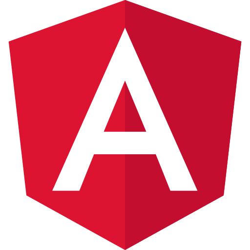

Projeto pessoal • TOTVS
Dashboard LGPD
Plataforma web para gestão de inventário de dados, matriz de riscos, indicadores de conformidade e monitoramento da maturidade em LGPD.

Projeto pessoal • TOTVS
Plataforma web para gestão de inventário de dados, matriz de riscos, indicadores de conformidade e monitoramento da maturidade em LGPD.
2026
Ano
Dashboard
Categoria
TOTVS
Instituição
Analytics
Escopo
O Dashboard LGPD foi desenvolvido para centralizar informações de conformidade com a Lei Geral de Proteção de Dados em uma única interface. A aplicação organiza inventários de dados, registros de risco, heatmaps, indicadores de maturidade, planos de ação e relatórios executivos, permitindo uma visão clara da exposição de dados pessoais e do nível de conformidade da organização.
Facilitar o gerenciamento de dados pessoais, riscos e ações corretivas, oferecendo uma visão executiva da conformidade com a LGPD.
Empresas, equipes de compliance, governança, jurídico, segurança da informação e consultorias em proteção de dados.
Dashboard interativo com importação de planilhas, visualização analítica de riscos e indicadores estratégicos para tomada de decisão.
Indicadores de conformidade, maturidade LGPD e visão consolidada dos dados.
Cadastro de subprocessos, tipos de dados, bases legais e compartilhamentos.
Probabilidade, severidade, nível de risco e estratégias de mitigação.
Visualizações analíticas para apoio à tomada de decisão e priorização de ações.
HTML5
Estrutura

CSS3
Interface
JavaScript
Lógica da aplicação
Chart.js
Visualização de dados
XLSX
Importação de planilhas

PapaParse
Leitura de CSV
O Dashboard LGPD consolidou conhecimentos em JavaScript, manipulação de dados, visualização analítica, integração de módulos e organização de informações de conformidade. O projeto proporcionou experiência prática na construção de dashboards executivos voltados para governança, proteção de dados e apoio à tomada de decisão.
+15
Gráficos e Indicadores
100%
Importação de Dados
6
Módulos Integrados
Analytics
Experiência Prática